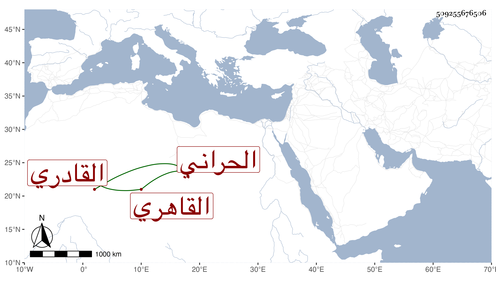

0902Sakhawi.DawLamic.ITO20230111-ara1.EIS1600.509255676506
Biography ID: 509255676506
99
محمد بن عبد العزيز بن محمد جلال الدين بن العز بن البدر الحراني الأصل القاهري القادري أخو عبد القادر الماضي لأبيه والمحب بن بلكا القادري لأمه . ممن حفظ القرآن والعمدة وسمع على شيخنا وغيره كالبخاري بالظاهرية حيث سمع فيه وأجاز له جماعة باستدعاء ابن فهد وغيره وتكررت تسمية ابن فهد لأبيه بمحمد وهو غلط . ومات قبل أن يتكهل سنة ستين تقريبا رحمه الله .
